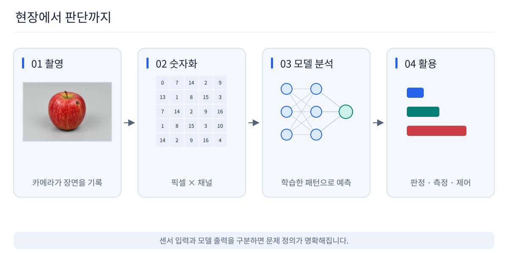
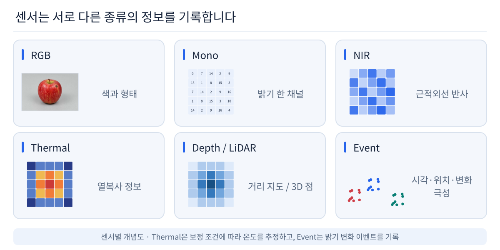
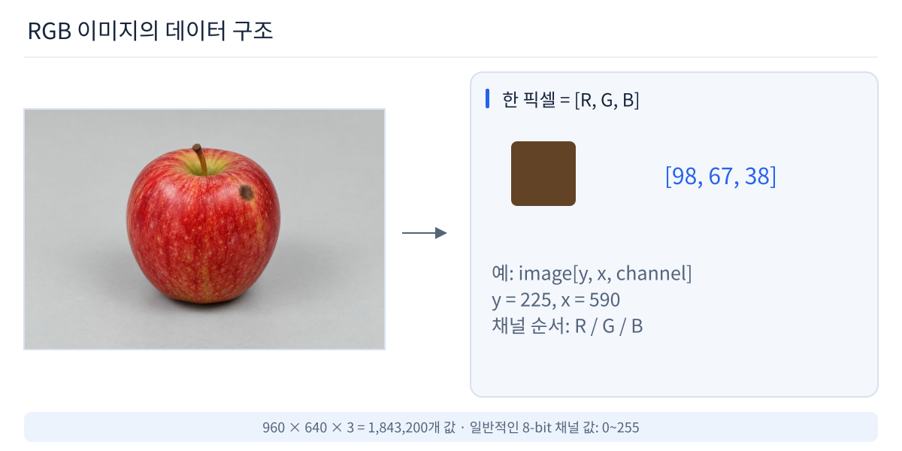

Lecture 01 · Vision AI Introduction
AI는 세상을 어떻게 볼까?
모델 구조부터 시작하지 않습니다. 현실 세계가 센서를 통해 어떤 숫자로 바뀌고, 왜 그 숫자에서 의미를 찾는 일이 어려운지부터 봅니다.
스마트폰은 어떻게 얼굴과 문자를 알아볼까?
자동차는 어떻게 차선과 보행자를 구분할까?
공장은 어떻게 작은 흠집과 이상 상태를 찾을까?
← → 방향키, 마우스 휠, 모바일 좌우 스와이프로 이동
1
Vision AI란?
시각 센서에서 얻은 데이터를 이용해 장면의 의미를 추출하고 판단·측정·제어에 연결하는 기술입니다.

2
Vision AI는 이미 일상 가까이에 있습니다
Smartphone
사진과 카메라
얼굴·장면 인식, 배경 분리, 사진 검색
Document
OCR · QR
사진 속 문자와 코드를 디지털 정보로 변환
Mobility
차량과 로봇
차선, 보행자, 차량, 장애물 인식
Manufacturing
품질 검사
스크래치, 오염, 누락, 조립 상태 검사
Medical
의료 영상
X-ray, CT, MRI의 관심 영역 분석
Security
영상 모니터링
객체 추적, 침입·이상 행동 감지
Search
Visual Search
사진과 유사한 이미지·상품 검색
AR · 3D
공간 인식
깊이와 자세를 이용한 3D 공간 이해
3
컴퓨터의 “눈”은 RGB 카메라 하나가 아닙니다
센서가 무엇을 측정하느냐에 따라 같은 장면도 완전히 다른 숫자 데이터가 됩니다.

4
센서가 바뀌면 데이터 구조도 바뀝니다
RGB / Mono색과 밝기를 2D Pixel Grid로 기록합니다.
IR / Thermal적외선 반사나 열 복사 정보를 영상 형태로 기록합니다.
Depth Camera각 Pixel 위치에 카메라와 물체 사이 거리를 저장합니다.
LiDARLaser 기반 거리 측정 결과를 3D Point Cloud로 표현합니다.
Event Camera고정 FPS Frame 대신 Pixel 밝기 변화 Event를 비동기로 출력합니다.
중요: 실제 문제에서는 “어떤 모델?”보다 먼저 “어떤 정보를 센서로 얻을 수 있는가?”를 생각해야 합니다.
5
사람에게는 장면, 컴퓨터에게는 숫자

6
Pixel, Channel, Tensor
Pixel디지털 이미지의 한 위치입니다. RGB에서는 한 Pixel에 R, G, B 세 값이 있습니다.
Channel한 Pixel이 가지는 정보 축입니다. RGB는 3 Channel, Gray는 보통 1 Channel입니다.
Tensor딥러닝에서 이미지와 Feature를 담는 다차원 숫자 배열입니다.
FULL HD RGB
6,220,800
1920 × 1080 × 3 이미지 한 장의 Channel 값 개수
30 FPS
186,624,000
1초 동안 들어오는 Channel 값 개수
7
왜 Vision은 어려울까?
사람은 “같은 물체”라고 느껴도 컴퓨터가 받는 숫자는 계속 달라집니다.
Lighting
조명
밝기, 그림자, 반사
Viewpoint
시점
카메라 각도 변화
Scale
크기
거리와 해상도 변화
Occlusion
가림
일부만 보이는 물체
Background
배경
관심 물체 외의 패턴
Motion
Blur
움직임과 노출 변화
Domain
카메라 변화
Lens, Sensor, 색 보정
Data
희귀한 이상
중요한 불량은 적을 수 있음
8
Vision AI는 어떤 질문에 답할까?
Classification무엇인가?
Detection무엇이 어디에 있는가?
Segmentation정확히 어느 Pixel인가?
Tracking어디로 움직이는가?
Depth / 3D얼마나 멀고 어떤 공간인가?
다음 질문은 “그럼 모델은 어떤 원리로 이 숫자에서 패턴을 학습할까?”입니다.
CNN 전에 Weight, Loss, Backpropagation, Dataset 같은 AI 기초를 먼저 봅니다.